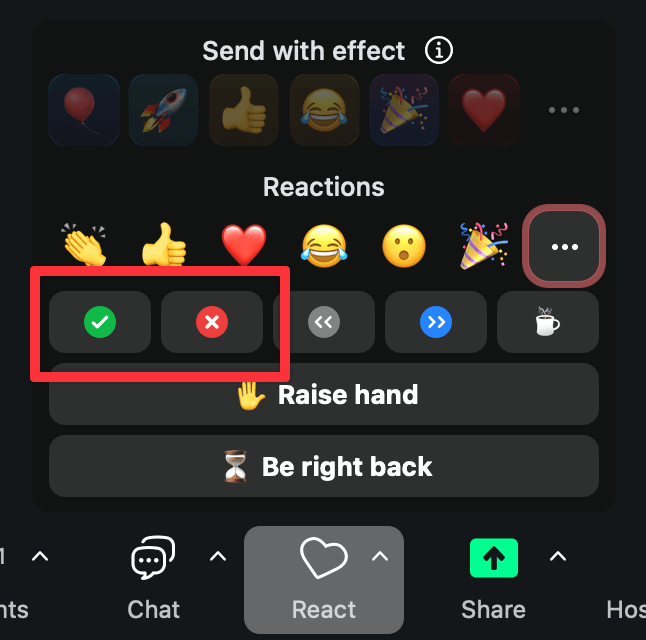
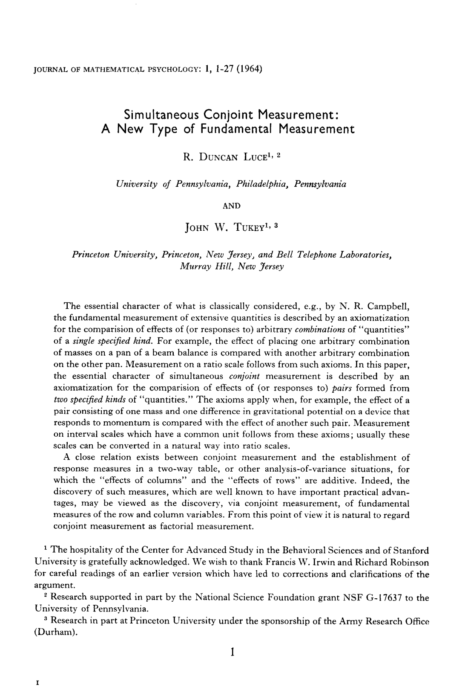
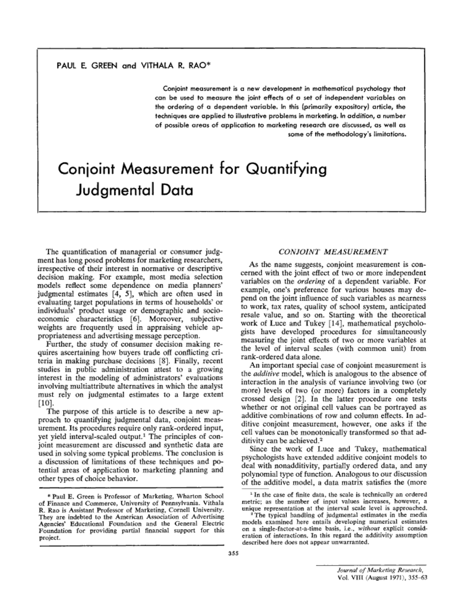
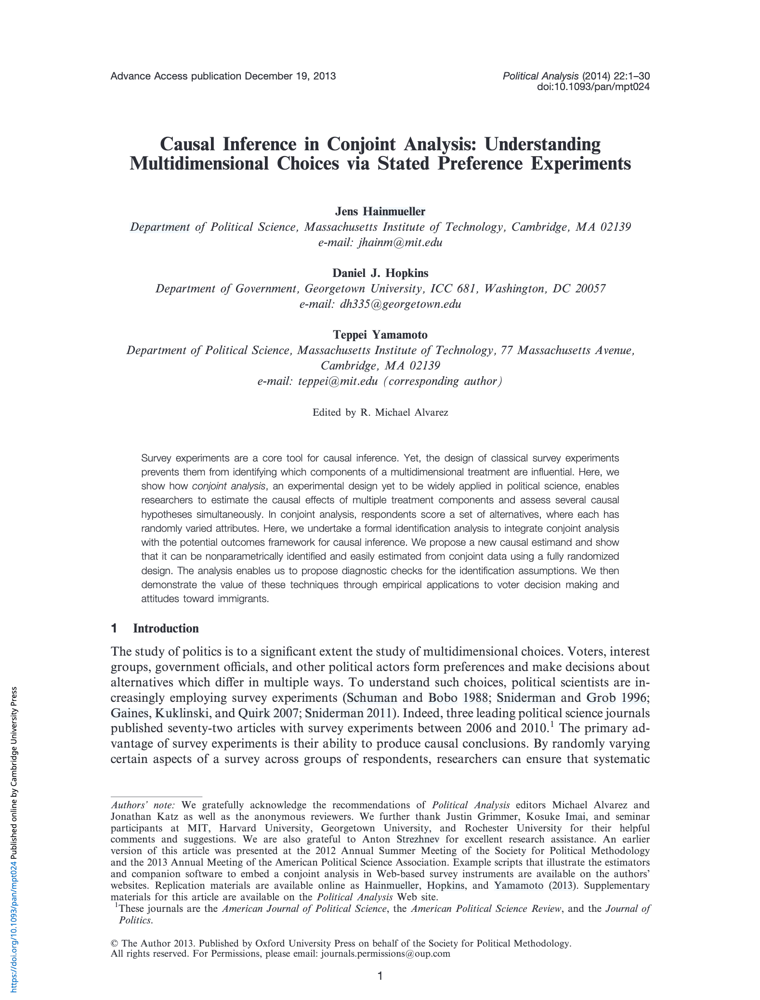
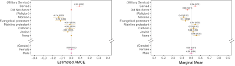
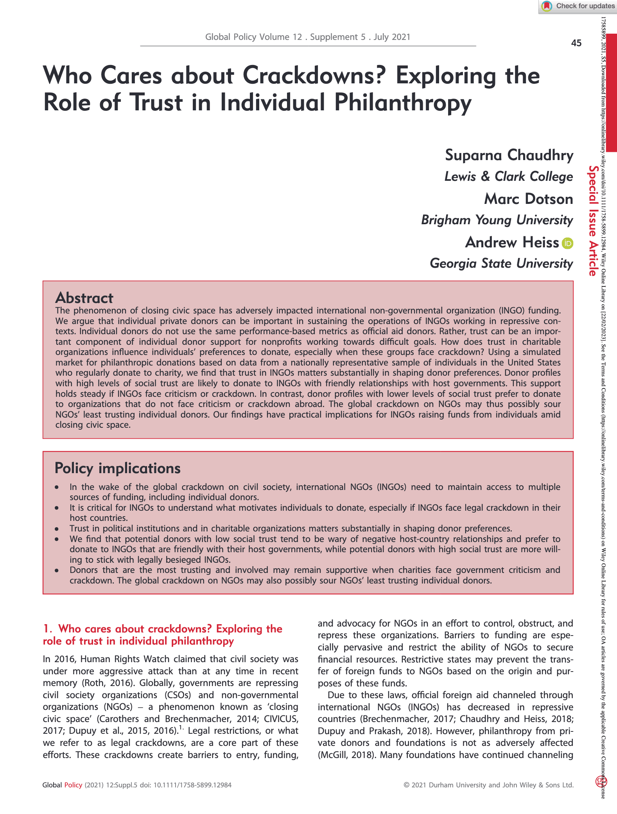
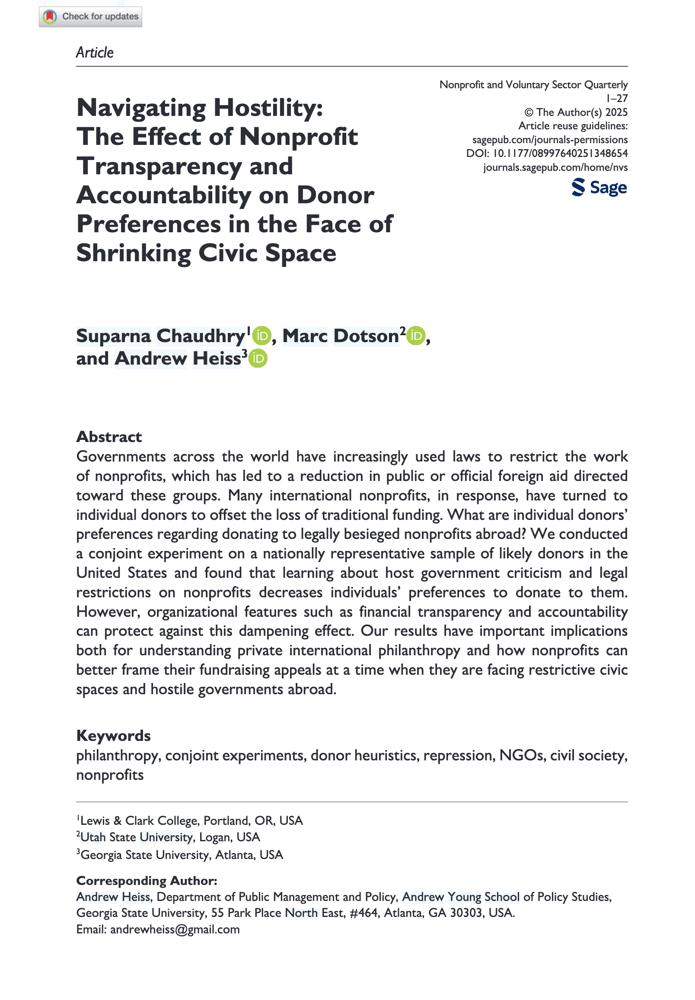
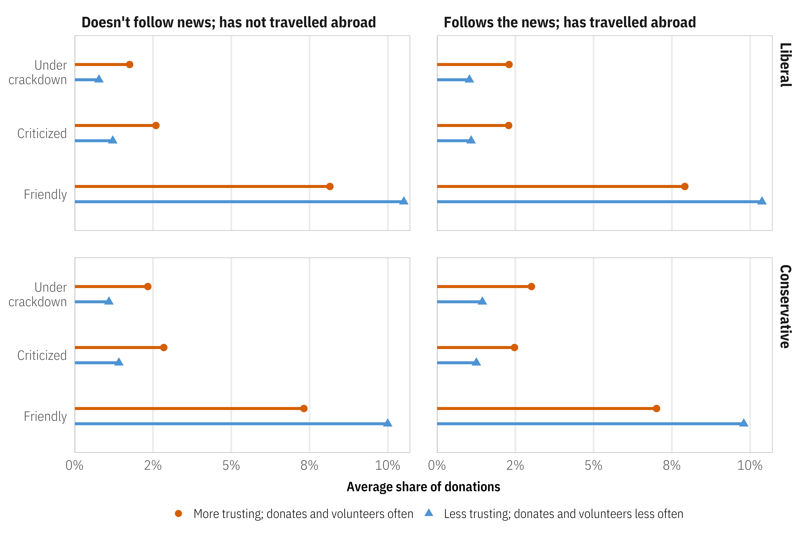
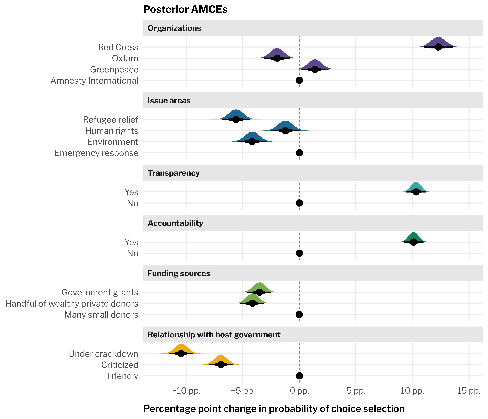

Be kind and curious!
Slack and Zoom chat
Ask questions
| Time | Activity |
|---|---|
| 10:30–12:30 | Welcome + Intro to conjoint analysis |
| 12:30–13:30 | Break |
| 13:30–15:00 | Designing conjoint experiments |
| Time | Activity |
|---|---|
| 10:30–12:30 | Conjoint data and causal inference (part 1) |
| 12:30–13:30 | Break |
| 13:30–15:00 | Conjoint data and causal inference (part 2) |
| Time | Activity |
|---|---|
| 10:30–12:30 | Conjoint data and respondent preferences (part 1) |
| 12:30–13:30 | Break |
| 13:30–15:00 | Conjoint data and respondent preferences (part 2) |
| Time | Activity |
|---|---|
| 10:30–12:30 | Implementing and fielding conjoint surveys (part 1) |
| 12:30–13:30 | Break |
| 13:30–15:00 | Implementing and fielding conjoint surveys (part 2) |
Andrew Heiss
Assistant professor of public policy international relations, Georgia State University Georgetown University in Qatar
Data visualization, statistics, and causal inference
This course is designed for someone who:
Is familiar with R (and ideally tidyverse)
Has some experience with statistical modeling with linear models
Maybe has an idea for a conjoint experiment
You’ll learn:
What conjoint analysis is
How to measure causal effects and explore “product” and “consumer” preferences
How to design and run your own conjoint experiments
My turn
Your turn

Use Zoom reactions
=
“I’m stuck and need help!”
=
“I finished the exercise”
Ask longer, more detailed questions in Slack
Introduce yourself:
How do you measure what people really want?
People make trade-offs. Survey experiments that don’t force trade-offs can give misleading answers.
It’s hot outside and you want to buy some ice cream. You go to your local ice cream shop and find a menu with all these possibilities:
Which kind do you want? Why?
No ice cream maximizes everyone’s happiness.
There are too many trade-offs
Conjoint analysis is a family of survey-based techniques where respondents evaluate or choose among hypothetical profiles described by multiple attributes, revealing their preferences through the trade-offs they make.
conjoint = considered jointly
Respondents evaluate attributes together (as bundles), not separately
Use statistics to uncover preferences from these bundles
Luce, R. Duncan, and John W. Tukey. 1964. “Simultaneous Conjoint Measurement: A New Type of Fundamental Measurement.” Journal of Mathematical Psychology 1 (1): 1–27. https://doi.org/10.1016/0022-2496(64)90015-X.
Originally developed to measure preferences of sets of features

Green, Paul E., and Vithala R. Rao. 1971. “Conjoint Measurement for Quantifying Judgmental Data.” Journal of Marketing Research 8 (3): 355. https://doi.org/10.2307/3149575.
Adapted to answer marketing questions:
Uses: consumer electronics, airlines, credit cards, pharmaceuticals, automobiles

Hainmueller, Jens, Daniel J. Hopkins, and Teppei Yamamoto. 2014. “Causal Inference in Conjoint Analysis: Understanding Multidimensional Choices via Stated Preference Experiments.” Political Analysis 22 (1): 1–30. https://doi.org/10.1093/pan/mpt024.
Instead of analyzing a whole constellation of attributes, look at specific levers individually.
Conjoints are like RCTs, just fancier.
Since treatment assignment is random, we can find the effect on the selection of probability (or favorability) when changing an attribute.
Uses: Measure effects of political candidate characteristics, issue salience, organization characteristics


Marketing
Social science
Same data and same models,
completely different estimands



Chaudhry, Suparna, Marc Dotson, and Andrew Heiss. 2021. “Who Cares about Crackdowns? Exploring the Role of Trust in Individual Philanthropy.” Global Policy 12 (S5): 45–58. https://doi.org/10.1111/1758-5899.12984.

Chaudhry, Suparna, Marc Dotson, and Andrew Heiss. 2025. “Navigating Hostility: The Effect of Nonprofit Transparency and Accountability on Donor Preferences in the Face of Shrinking Civic Space.” Nonprofit and Voluntary Sector Quarterly, 1–27. https://doi.org/10.1177/08997640251348654.